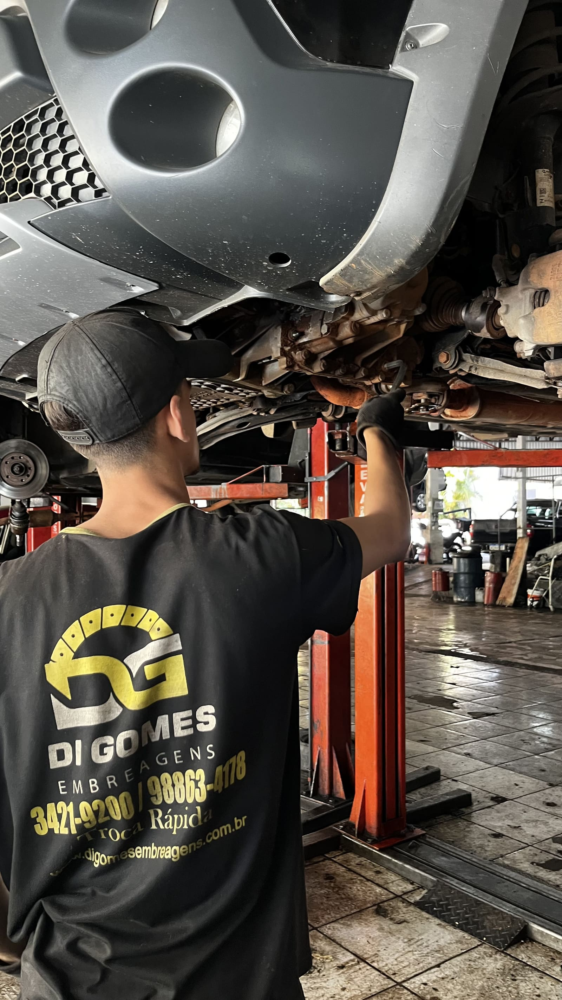

Nem toda dificuldade para engatar vem do câmbio
Antes de desmontar a transmissão, é importante conferir embreagem, cabos, trambulador, acionamento hidráulico, coxins e nível de óleo. Todos eles podem mudar a sensação na alavanca.
Problemas comuns
- rolamento roncando em determinada marcha;
- sincronizador desgastado e marcha arranhando;
- vazamento por retentor ou junta;
- folga em diferencial e componentes internos;
- marcha escapando durante a condução.
Quando a abertura é necessária, as peças são inspecionadas e o orçamento considera o que de fato apresenta desgaste, além de fluidos, retentores e itens de montagem.
Cuidados que ajudam a preservar
Não apoie a mão na alavanca durante o trajeto, pise completamente na embreagem ao trocar marchas e investigue vazamentos. O óleo correto e no nível adequado é essencial para rolamentos e engrenagens.
Marcha arranhando é sempre sincronizador?
Não. Embreagem que não desacopla por completo e falhas no acionamento também podem causar o sintoma.
Posso rodar com o câmbio roncando?
Não é recomendável adiar. Um rolamento ou folga pode danificar outros componentes e aumentar o reparo.